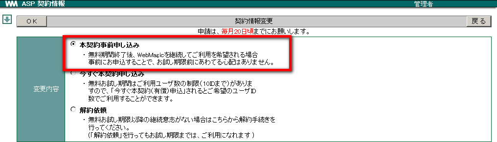
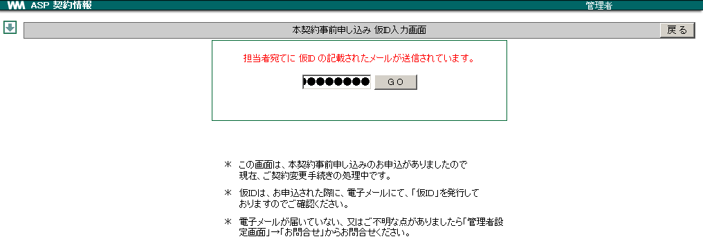

22. 契約関連¶
契約関連では、WebMagic ASP サービスのご契約状況が確認できます。試用期間から本契約への手続き、またID数の増減などの申請が行えます。また、ご契約管理者様の登録情報の変更もここから行えます。
22.1. 登録情報を変更する¶
メニューの
 をクリックします。
をクリックします。 をクリックします。
をクリックします。[登録情報] タブをクリックし、登録情報の変更を行い 適用 をクリックします。

確認メッセージが表示されたら OK をクリックします。
22.2. 契約内容を変更する¶
ASP サービスの契約内容の変更が行えます。変更に関する申し込み手続き内容は下記の3項目です。
| [ 本契約事前申しこみ ] |
|
| [ 今すぐ本契約 ] | 試用期限を待たずに、お申込された月から本契約となります。 |
| [ 解 約 依 頼 ] | 解約依頼された月の末日をもって、翌月１日よりサービスはご利用できません。 但し、試用期間中の場合は試用期限日までご利用可能で試用期間の翌月1日よりサービスはご利用できません。 |
ここでは、「本契約事前申し込み」の手続きを例に手順をご説明いたします。
メニューの
をクリックします。- をクリックします。
[契約情報] タブをクリックします。

契約情報変更 をクリックします。
試用期間中の契約内容は、次の通りです。
ご利用可能 ID 数: 10 ID (300MB) ご 利 用 期 間: 約3ヶ月間
「本契約事前申し込み」 をチェックし、 OK をクリックします。

本契約手続きの流れが表示されます。内容を確認し、 戻る をクリックします。また、同じ内容が管理者様あてに E-Mail で自動送信されるようになっています。

契約情報変更 をクリックします。

管理者様あてに送信された E-Mail に記載された仮 ID をご確認ください。仮 ID を入力し GO をクリックします。

「WebMagic ASP利用規約」 が表示されます。[同意します] を選択します。
「本契約事前申し込み」 の確認が表示されます。[同意します] を選択します。
本契約事前申し込み確認のメッセージが表示されますので OK をクリックします。
OCC 宛に契約変更依頼のメールが送信されました。弊社からの契約変更完了メールが届きましたら契約変更手続き完了です。 戻る をクリックします。

Note
上記、返答期間を過ぎても弊社より連絡がない場合は、お手数ですが [お問合せ] 画面よりご連絡ください。
22.3. ID数変更申しこみ¶
- 契約関連より ID 数の変更依頼が行えます。
- ID数の変更は、本契約の場合のみ有効です。
- 試用期間中の場合は、「本契約」 された月よりID数変更の申しこみを行うことができます。
メニューの
をクリックします。- をクリックします。
[契約情報] タブをクリックします。
契約情報変更 をクリックし、「ID数変更お申し込み」を選択して OK をクリックします。

流れを確認し、 戻る をクリックします。また、同じ内容が管理者様あてに E-Mail にて自動送信されます。
契約情報変更 をクリックします。
管理者様あてに送信された E-Mail に記載された仮 ID をご確認ください。仮 ID を入力し GO をクリックします。

「ID数変更申しこみ」 より変更 ID 数を選択し、 変更します をクリックします。

メッセージが表示されたら OK をクリックします。
OCC宛に契約変更依頼のメールが送信されました。 戻る をクリックします。
弊社からの契約変更完了メールが届きましたら契約手続き完了です。